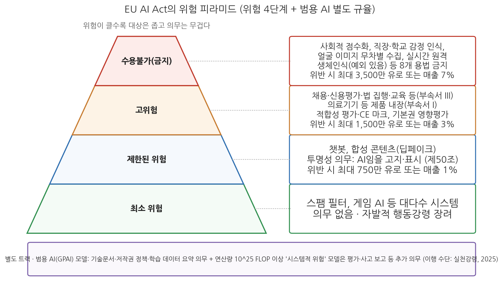
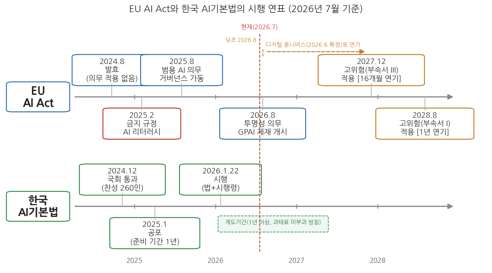

11주차 2차시. AI와 규제 (2): EU AI Act와 한국 AI기본법
이 법의 목적은 역내 시장의 기능을 개선하고 인간 중심적이며 신뢰할 수 있는 인공지능의 확산을 촉진하는 한편, 건강, 안전, 기본권에 대한 높은 수준의 보호를 보장하는 것이다. (EU AI Act 제1조 제1항)
이 장에서 배우는 것
2026년 1월 22일, 한국에서 「인공지능 발전과 신뢰 기반 조성 등에 관한 기본법」, 줄여서 AI기본법이 시행되었다. 2024년 12월 26일 국회 본회의를 통과하고 2025년 1월 21일 공포된 지 1년 만이다. 이로써 한국은 EU에 이어 세계에서 두 번째로 AI 전반을 포괄하는 법률을 시행하는 나라가 되었다. 같은 시기 지구 반대편에서는 정반대 방향의 장면이 연출되고 있었다. 앞서 나갔던 EU가 자국 AI법의 핵심 조항인 고위험 규제의 시행을 늦추는 개정 절차를 밟고 있었던 것이다. 2026년 여름으로 예정되어 있던 고위험 AI 의무의 적용은 2027년 말로 미뤄졌다. 한쪽에서는 세계 두 번째 AI법이 시행되고, 다른 쪽에서는 세계 첫 AI법이 시행도 되기 전에 후퇴하는 것, 이것이 2026년 AI 규제의 풍경이다.
1차시에서 우리는 규제의 정당화 논리와 접근법의 스펙트럼, 위험 기반 규제의 원리, 혁신과 규제의 긴장을 이론적으로 정리했다. 이 장은 그 이론이 실제 법으로 어떻게 구현되었는지를 본다. 위험 기반 강행규제의 원형인 EU AI Act를 해부하고, 그 2026년 현재의 시행 현황을 확인한 뒤, 한국 AI기본법의 내용과 시행 상황을 검토하고, 미국·영국·일본·중국의 선택과 비교한다. 법조문의 세부보다 중요한 것은 각 법제가 1차시의 스펙트럼 위 어디에 서 있으며, 왜 그 자리를 골랐는가다. 구체적으로 다음을 배운다.
- EU AI Act의 위험 4단계 구조와 의무·제재의 설계
- EU AI Act의 단계별 시행 경과와 2026년 디지털 옴니버스 개정(고위험 규제 연기)의 내용
- 한국 AI기본법의 주요 내용(고영향 AI, 투명성·안전성 의무)과 시행 현황(시행령, 계도기간)
- 미국·영국·일본·중국의 2026년 규제 현황과 비교의 축
- 규제의 실효성을 좌우하는 조건과 남은 쟁점
이 장은 하나의 질문을 따라 전개된다. "세계 각국은 AI 규제를 어떤 법으로 만들었고, 그 법들은 2026년 현재 실제로 작동하고 있는가?"
2.1 EU AI Act의 위험 4단계 구조를 해부한다 → 2.2 발효에서 디지털 옴니버스까지, 2026년 기준 시행 현황을 연표로 확인한다 → 2.3 한국 AI기본법의 내용과 시행 첫해를 검토한다 → 2.4 미국·영국·일본·중국의 선택을 비교한다 → 2.5 규제의 실효성과 남은 쟁점을 정리한다.
2.1 EU AI Act의 구조: 위험의 피라미드
세계 최초의 포괄적 AI 법률
EU AI Act는 AI에 관한 세계 최초의 포괄적 법률이다. 2021년 4월 EU 집행위원회가 초안을 제안했고, 협상 막바지에 챗GPT가 등장하면서 범용 AI 조항이 추가되는 우여곡절 끝에 2024년 상반기 유럽의회와 이사회를 통과하여 2024년 8월 1일 발효되었다. 법의 성격은 회원국 국내법으로 전환할 필요 없이 27개 회원국에 직접 적용되는 규정(Regulation)이며, EU 시장에 AI를 내놓는 역외 기업에도 적용되므로 사실상 글로벌 규제다.
법의 뼈대는 1차시에서 본 위험 기반 규제의 논리를 그대로 따른다. AI 시스템을 위험 수준에 따라 네 단계로 분류하고, 단계마다 다른 의무를 부과한다. 위로 갈수록 대상은 좁아지고 의무는 무거워지는 피라미드 구조다.

그림 11-2를 읽는 법은 이렇다. 피라미드의 네 층이 위험 등급이며, 왼쪽은 각 등급의 대표 예시, 오른쪽은 부과되는 의무의 성격이다. 피라미드 옆의 별도 상자는 위험 등급 체계와 별개 트랙으로 규율되는 범용 AI 모델이다. 이 그림에서 알 수 있는 것은 두 가지다. 첫째, 규제의 무게는 꼭대기에 집중되어 있고 대다수 AI(최소 위험)는 사실상 규제 밖에 있다. 둘째, 용도 기반 피라미드에 들어맞지 않는 범용 AI는 결국 별도의 층으로 옆에 세울 수밖에 없었다.
네 단계의 의무 설계
수용불가 위험(금지). 피라미드의 꼭대기에는 위험 계산과 무관하게 사용 자체가 금지되는 목록이 있다. 인간의 존엄성, 자유, 평등, 민주주의라는 EU의 기본 가치를 침해하는 용법들로, 잠재의식 조작 등 인간의 의사결정을 왜곡하는 기법, 개인·집단의 취약성 악용, 공적 기관 등에 의한 사회적 점수화(social scoring), 프로파일링에 기초한 범죄 위험 예측, 인터넷과 CCTV에서 얼굴 이미지를 무차별 수집하는 데이터베이스 구축, 직장·교육기관에서의 감정 인식, 민감 정보를 추론하는 생체인식 분류, 그리고 법 집행 목적의 공개 장소 실시간 원격 생체인식(엄격한 예외 존재)이 그것이다. 7주차에서 본 안면인식 논쟁이 이 목록의 배경이다. 위반 시 제재금은 최대 3,500만 유로 또는 전 세계 연 매출의 7% 중 큰 금액으로, GDPR을 능가하는 수준이다.
고위험. 규제의 실질적 본체다. 두 갈래가 있는데, 하나는 의료기기·기계·차량처럼 기존 EU 제품 안전 규제를 받는 제품에 AI가 안전 요소로 들어가는 경우(부속서 I)이고, 다른 하나는 법이 열거한 8개 영역, 곧 생체인식, 중요 인프라, 교육, 고용, 필수 서비스(신용평가 등), 법 집행, 이주·국경, 사법·민주적 절차에 쓰이는 독립형 시스템(부속서 III)이다. 고위험 AI의 공급자는 시장 출시 전에 위험관리 시스템, 데이터 거버넌스, 기술문서, 로그 기록, 투명성, 인간 감독, 정확성·견고성·보안에 관한 요구사항을 갖추어 적합성 평가를 통과하고 CE 마크를 받아야 하며, 출시 후에도 시판 후 모니터링과 중대 사고 보고 의무를 진다. 배포자(운영자)에게도 의무가 있다. 감독자 지정, 입력 데이터의 적절성 보장, 작동 모니터링이 부과되고, 특히 공공기관 등이 고위험 AI를 쓰거나 신용평가 등에 활용할 때는 9주차에서 본 기본권 영향평가(FRIA)를 수행해야 한다. 위반 시 최대 1,500만 유로 또는 연 매출 3%의 제재금이 부과된다.
제한된 위험(투명성 의무). 사람과 상호작용하거나 콘텐츠를 생성하는 AI에는 "AI임을 알려라"라는 의무가 부과된다(제50조). 챗봇은 상대가 AI와 대화하고 있음을 인식할 수 있게 해야 하고, 합성 콘텐츠(오디오·이미지·영상·텍스트)는 기계판독 가능한 방식으로 AI 생성물임을 표시해야 하며, 딥페이크는 그 사실을 공개해야 한다. 6주차에서 본 허위정보 문제에 대한 최소한의 방어선이다. 당국에 부정확한 정보를 제공하는 등의 위반에는 최대 750만 유로 또는 연 매출 1%의 제재금이 적용된다.
최소 위험. 스팸 필터, 게임 AI, 추천 기능 등 대다수 시스템이 여기 속하며 법적 의무는 없다. 다만 고위험 의무의 일부를 자발적으로 채택하는 행동강령(code of conduct)이 장려된다. 1차시의 스펙트럼으로 말하면, 강행규제 법률의 맨 아래층에 자율규제를 접어 넣은 것이다.
범용 AI(GPAI) 모델. 특정 용도가 없는 대규모 모델은 위 피라미드와 별개의 트랙으로 규율된다. 모든 GPAI 제공자는 기술문서 작성, 다운스트림 사업자에 대한 정보 제공, EU 저작권법 준수 정책, 학습 데이터 요약 공개 의무를 지며, 학습 연산량 기준(10^25 FLOP 이상)으로 "시스템적 위험"이 있다고 분류된 모델에는 모델 평가, 적대적 테스트, 사고 보고, 사이버보안 등 추가 의무가 부과된다. 1차시에서 본 실천강령(2025년 7월 공개)이 이 의무의 이행 수단이다.
이 밖에 법은 규제만이 아니라 혁신 지원 장치, 곧 회원국별 규제 샌드박스 설치 의무, 실제 환경 테스트 허용, 중소기업·스타트업 지원을 규정하고, 집행을 위해 EU 집행위원회 산하 AI사무국(AI Office)과 회원국 대표로 구성된 AI위원회(AI Board), 과학 패널, 자문 포럼이라는 거버넌스 기구를 세웠다. 범용 AI 모델에 대한 감독과 제재는 AI사무국이 EU 차원에서 직접 담당하고, 나머지는 회원국 감독당국이 집행한다.
2.2 2026년, EU AI Act는 어디까지 시행되었나
단계적 시행의 시간표
EU AI Act는 발효 즉시 전부 적용되는 법이 아니라, 조항 묶음별로 적용 시점을 달리하는 단계적 시행을 택했다. 2026년 7월 현재까지의 경과와 남은 일정은 다음과 같다. 이 시간표는 2026년 상반기의 개정(뒤에서 설명할 디지털 옴니버스)으로 한 차례 크게 바뀌었으므로, 시점에 유의해서 읽어야 한다.
- 2024년 8월 1일, 발효. 법적 효력은 생겼지만 아직 어떤 의무도 적용되지 않는 상태로 출발했다.
- 2025년 2월 2일, 금지 규정과 AI 리터러시 의무 적용. 사회적 점수화, 감정 인식 등 수용불가 위험 목록의 사용 금지가 가장 먼저 시행되었다. AI 시스템 제공자·배포자가 관련 인력의 AI 이해 역량을 확보해야 한다는 의무도 함께 적용되었다.
- 2025년 8월 2일, 범용 AI 의무와 거버넌스 규정 적용. 신규 GPAI 모델 제공자의 의무(기술문서, 저작권 정책, 학습 데이터 요약 등)가 적용되기 시작했고, AI사무국 등 거버넌스 체계와 제재 규정이 가동되었다. 이에 앞서 2025년 7월 이행 수단인 GPAI 실천강령이 공개되었다.
- 2026년 8월 2일, 투명성 의무 적용과 GPAI 제재 집행 개시. 챗봇 고지, 합성 콘텐츠 표시 등 제50조 투명성 의무가 예정대로 적용된다(기존 시스템의 워터마킹에는 2026년 12월 2일까지 유예). 또 이날부터 AI사무국이 GPAI 의무 위반에 제재금을 부과할 수 있게 된다.
- 2027년 12월 2일, 부속서 III 고위험 의무 적용(연기됨). 채용, 신용평가, 법 집행, 교육 등 독립형 고위험 시스템에 대한 의무는 당초 2026년 8월 2일 적용될 예정이었으나 16개월 연기되었다.
- 2028년 8월 2일, 부속서 I 고위험 의무 적용(연기됨). 의료기기 등 제품 내장형 고위험 AI에 대한 의무는 당초 2027년 8월 2일에서 1년 연기되었다.

그림 11-3을 읽는 법은 이렇다. 위 레인이 EU AI Act, 아래 레인이 한국 AI기본법의 주요 일정이며, 왼쪽에서 오른쪽으로 시간이 흐른다. EU 레인에서 점선 화살표로 표시된 두 항목이 디지털 옴니버스로 연기된 고위험 의무다. 이 그림에서 알 수 있는 것은 두 가지다. 첫째, 두 법 모두 "제정 즉시 시행"이 아니라 단계적 시행과 유예를 설계에 내장했다. 1차시에서 본 혁신과 규제의 긴장을 시간표로 다루는 방식이다. 둘째, 먼저 출발한 EU의 시간표가 오히려 뒤로 밀리면서, 규제의 무게중심이 되는 고위험 규제의 실제 작동 시점은 EU(2027년 말)가 한국의 법 시행(2026년 초)보다 늦어지게 되었다.
디지털 옴니버스: 시행되기 전에 개정된 법
2025년 11월 19일 EU 집행위원회는 디지털 분야 규제를 일괄 손질하는 "디지털 옴니버스(Digital Omnibus)" 패키지를 제안했다. 명분은 규제 단순화와 유럽의 경쟁력이었다. 2024년 9월 마리오 드라기 전 유럽중앙은행 총재의 EU 경쟁력 보고서가 과도한 규제 부담을 유럽 침체의 원인으로 지목한 이후, 규제 간소화는 집행위의 최우선 의제가 되어 있었다. AI Act에 관한 핵심 내용은 고위험 규제의 연기였다. 근거로 제시된 것은 준비 부족, 곧 적합성 평가의 기반이 될 유럽 표준화기구(CEN-CENELEC)의 기술 표준이 완성되지 않았고 회원국의 감독 체계 정비도 늦다는 점이었다. 2026년 5월 유럽의회·이사회·집행위 3자 협상에서 잠정 합의가 이루어졌고, 유럽의회(6월 16일)와 이사회(6월 29일)의 최종 승인을 거쳐 확정되었다. 부속서 III 고위험 의무는 2026년 8월에서 2027년 12월로, 부속서 I은 2027년 8월에서 2028년 8월로 미뤄졌다. 다만 투명성 의무와 GPAI 제재 집행은 예정대로 2026년 8월에 시작되며, 당사자 동의 없는 성적 합성영상물 생성 금지 등 금지 목록의 보강도 함께 이루어졌다. 시민사회는 "기본권 보호의 후퇴"라고 비판했고, 산업계는 "현실적 조정"이라고 환영했다.
이 사례가 보여 주는 것은 세 가지다. 첫째, 1차시에서 본 보조 맞추기 문제의 실증이다. 2021년에 설계된 법은 2024년에 제정되었고, 2026년 시행을 앞두고 이미 현실과 어긋나 개정되었다. 법이 완성되는 속도보다 기술과 정치가 변하는 속도가 빨랐다. 둘째, 규제 후퇴 압력은 규제의 본산에서도 작동한다는 점이다. 브뤼셀 효과를 자신하던 EU조차 경쟁력 논리 앞에서 시간표를 물렀다. 셋째, 그럼에도 이 개정은 폐기가 아니라 연기라는 점이다. 위험 피라미드의 골격, 금지 목록, 투명성 의무는 그대로이며, 오히려 금지 목록은 강화되었다. EU의 실험이 실패로 판명 났다고 결론 내리기에는 이르고, 고위험 규제가 실제 가동되는 2027년 말 이후가 진짜 시험대가 될 것이다.
GDPR 때처럼 EU AI Act가 세계 표준이 될 것이라는 기대(브뤼셀 효과)는 2026년 현재 절반만 실현되었다. 실현된 절반은 설계의 확산이다. 위험 기반 분류, 투명성 의무, 영향평가라는 어휘는 한국 AI기본법을 비롯한 각국 입법에 뚜렷이 스며들었다. 실현되지 않은 절반은 기준의 수렴이다. 미국은 연방 차원의 포괄 입법을 거부하고 혁신 우선으로 갔고, 일본은 벌칙 없는 진흥법을 택했으며, EU 스스로 시행을 늦췄다. 규제 내용이 하나로 수렴하는 대신, "위험 기반"이라는 문법만 공유한 채 강도는 제각각인 세계가 되어 가고 있다. 브래드퍼드가 말한 브뤼셀 효과의 조건 중 시장 규모와 규제 역량은 갖춰졌지만, 규제의 비탄력성(기업이 시장별로 기준을 쪼개기 어려움)이 AI에서는 약하기 때문이라는 해석이 있다. 소프트웨어는 시장별 버전 분리가 상대적으로 쉽다.
2.3 한국 AI기본법: 진흥과 규제의 이중주
제정 경위와 법의 성격
한국의 AI 입법 논의는 2020년 전후 21대 국회에서 시작되었으나 여러 법안이 상임위 문턱을 넘지 못하고 임기 만료로 폐기되었다. 22대 국회에서 여야 의원들이 발의한 19건의 법안을 병합한 대안이 만들어졌고, 2024년 12월 26일 본회의에서 재석 264인 중 찬성 260인으로 「인공지능 발전과 신뢰 기반 조성 등에 관한 기본법」이 통과되었다. 2025년 1월 21일 공포되어 1년의 준비 기간을 거쳐 2026년 1월 22일 시행되었으며, 고영향 AI의 범위 등 세부를 정한 시행령도 2025년 10월 입법예고와 국무회의 의결을 거쳐 같은 날 함께 시행되었다. 정부는 시행에 맞춰 기업의 문의에 답하는 "AI기본법 지원 데스크"를 운영하고, 시행 초기 1년 이상 과태료를 부과하지 않는 계도기간을 두기로 했다.
법의 이름에 성격이 담겨 있다. "발전"(진흥)과 "신뢰 기반 조성"(규제)을 나란히 놓은 기본법이다. 실제 조문의 다수는 규제가 아니라 진흥에 할애되어 있다. 과학기술정보통신부 장관이 3년마다 수립하는 인공지능 기본계획, 연구개발·표준화·데이터 정책 지원, 인공지능집적단지와 데이터센터 육성, 전문인력 양성, 중소기업 지원 등이다. 거버넌스로는 대통령 소속 국가인공지능위원회를 두었는데, 정부는 법 시행에 앞서 2025년 9월 이를 확대 개편한 국가인공지능전략위원회를 출범시켰다(위원장은 대통령이며, 8개 분과에 민간위원이 참여하는 국가 AI 정책의 컨트롤타워다). 안전 연구를 담당하는 AI안전연구소는 법 통과 직전인 2024년 11월에 이미 문을 열었다.
규제의 핵심: 고영향 AI와 두 가지 의무
규제 파트의 중심 개념은 EU의 "고위험"에 대응하는 고영향 인공지능이다.
고영향 인공지능은 사람의 생명, 신체의 안전 및 기본권에 중대한 영향을 미치거나 위험을 초래할 우려가 있는 영역에서 활용되는 AI 시스템을 말한다. 법률과 시행령은 그 영역으로 에너지, 먹는물, 보건의료·의료기기, 원자력, 범죄 수사에서의 생체인식정보 분석, 채용·대출 심사 등 개인의 권리·의무에 중대한 영향을 미치는 판단·평가, 교통, 공공서비스 제공에 필요한 자격의 확인·결정, 교육 등을 열거한다. EU의 고위험 목록과 상당히 겹치지만, 분류에 따른 의무의 무게는 크게 다르다.
인공지능사업자(개발사업자와 이용사업자를 포괄한다)에게 부과되는 의무는 크게 두 갈래다.
첫째, 투명성 의무다. 고영향 AI 또는 생성형 AI를 이용한 제품·서비스는 그 사실을 이용자에게 사전 고지해야 하고, 생성형 AI의 산출물에는 AI가 생성했음을 표시해야 한다. 특히 실제와 구분하기 어려운 딥페이크류 가상 콘텐츠에는 명확한 고지가 요구된다. EU 제50조와 같은 계열의 의무로, 6주차에서 본 딥페이크·허위정보 문제에 대한 한국식 응답이다.
둘째, 안전성·신뢰성 확보 의무다. 사업자는 자신의 AI가 고영향에 해당하는지 사전에 검토해야 하고, 고영향에 해당하면 위험관리 방안의 수립·운영, 설명 방안 마련, 이용자 보호 방안, 사람에 의한 관리·감독, 그리고 이행을 입증할 문서의 작성·보관(5년) 의무를 진다. 또 학습에 사용된 누적 연산량이 10의 26제곱 부동소수점 연산 이상인 대규모 AI(사실상 최첨단 범용 모델)의 사업자는 위험의 식별·평가·완화와 위험관리체계 구축 결과를 정부에 제출해야 한다. EU가 10의 25제곱을 시스템적 위험의 문턱으로 삼은 것과 같은 발상이되, 문턱을 한 자릿수 높게 잡았다.
이 밖에 일정 규모 이상의 해외 사업자(전년도 매출 1조 원 이상, AI 부문 매출 100억 원 이상, 국내 일평균 이용자 100만 명 이상 중 하나에 해당)는 국내대리인을 지정해야 하며, 과학기술정보통신부 장관은 법 위반이 의심되면 사실조사를 하고 시정명령을 내릴 수 있다.
EU와의 비교: 같은 문법, 다른 강도
한국 AI기본법은 위험 기반 분류, 투명성 의무, 문서화와 인간 감독이라는 점에서 EU와 같은 문법을 쓴다. 그러나 강도는 다르다. 첫째, 금지 목록이 없다. EU가 여덟 갈래 용법을 원천 금지한 것과 달리, 한국법에는 수용불가 등급 자체가 없다. 둘째, 제재가 가볍다. EU의 제재금이 최대 3,500만 유로 또는 매출 7%인 데 비해, 한국의 과태료는 최대 3,000만 원이고 그나마 시행 초기에는 계도 위주로 운영된다. 사실조사도 인명 사고 등 중대한 경우로 한정한다는 방침이다. 셋째, 사전 인증이 없다. EU 고위험 AI가 출시 전 적합성 평가와 CE 마크를 요구받는 것과 달리, 한국은 사업자의 자율적 사전 검토와 사후 감독을 결합했다. 넷째, 법의 무게중심이 다르다. EU AI Act가 규제 법률에 혁신 지원을 얹은 구조라면, 한국법은 진흥 기본법에 최소한의 규제를 얹은 구조다. 1차시의 스펙트럼으로 말하면 한국은 강행규제의 형식을 취하되 실질은 공동규제와 계도에 가까운 자리에서 출발한 셈이다.
이 설계를 두고 평가는 갈린다. 산업계 일각에서는 세계에서 두 번째로 규제 법률을 서둘러 만든 것 자체가 부담이라며 "규제가 혁신을 앞질렀다"고 비판한다. 반대편에서는 금지 규정도 실질적 제재도 없는 "이빨 없는 규제"여서 시민 보호에 불충분하다고 비판한다. 같은 법이 과잉규제이자 과소규제로 동시에 비판받는 이 상황은, 1차시에서 본 규제 정치의 축소판이다. 시행령과 고시, 계도기간 운영, 그리고 첫 집행 사례들이 이 법의 실제 좌표를 정하게 될 것이다.
이 장이 다루는 법들은 모두 움직이는 과녁이다. EU AI Act는 시행 전에 이미 한 차례 개정되었고, 한국 AI기본법도 시행 전후로 개정안과 시행령 손질이 이어지고 있으며, 미국은 행정부가 바뀔 때마다 방향이 뒤집혔다. 이 장의 시행 시점과 수치는 2026년 7월 기준이며, 시험 답안이나 보고서에 인용할 때는 반드시 그 시점의 최신 상태를 다시 확인해야 한다. 법제의 "현재"를 확인하는 습관 자체가 이 장의 학습 목표 중 하나다.
2.4 주요국의 선택: 미국, 영국, 일본, 중국의 2026년
미국: 혁신 우선의 연방과 규제하는 주들
미국의 접근은 역동적이고 분산적이라는 말로 요약된다. 연방 차원의 포괄적 AI 법률은 2026년 현재도 없으며, 정책의 축은 행정명령이다. 트럼프 행정부는 2025년 1월 취임 직후 바이든 행정부의 2023년 AI 행정명령(안전 평가 의무 등을 담은 EO 14110)을 폐지하고, 1월 23일 행정명령 14179호 "미국 AI 리더십의 장벽 제거"를 발령했다. 규제가 아니라 "장벽 제거"가 이름에 들어간 데서 드러나듯, 혁신과 경쟁 우선의 사고방식이 공식 노선이 되었고, 2025년 7월에는 이를 구체화한 AI 행동계획(AI Action Plan)이 발표되었다.
다만 연방정부도 정부 자신의 AI 사용에는 규율을 둔다. 관리예산처(OMB)가 2025년 4월 발표한 지침(M-25-21)은 시민의 권리, 안전, 필수 서비스 접근에 중대한 영향을 미칠 수 있는 "영향력이 큰(high-impact) AI"를 정의하고, 연방기관에 배포 전 테스트, AI 영향평가, 지속적 모니터링, 인간 감독 등 최소 위험관리 관행을 의무화했다. 기관들은 지침 발령 후 1년 안에(2026년 4월까지) 이를 충족하지 못하는 고영향 AI의 사용을 중단해야 했다. 위험 기반 문법이 여기서도 반복되는 것을 확인할 수 있다.
연방이 비운 자리는 주(州)들이 채웠다. 2024년 콜로라도가 미국 최초의 포괄적 AI 차별 방지법을 제정한 것을 비롯해, 2026년 1월 1일에는 텍사스의 책임 있는 AI 거버넌스법(TRAIGA)과 캘리포니아의 프런티어 AI 투명성법(SB 53, 연 매출 5억 달러 이상의 대규모 개발사에 안전 프레임워크 공개와 사고 보고를 요구)이 발효되는 등 주법이 쏟아졌다. 그 결과는 1차시에서 본 "파편화된 규제 모자이크"의 미국판이며, 연방과 주의 정면충돌로 이어졌다.
2025년 여름 연방의회에서는 주 AI 법률의 집행을 10년간 유예(모라토리엄)하는 조항이 예산 법안에 포함되었다가, 2025년 7월 상원에서 99 대 1로 삭제되었다. 주의 규제 권한을 지키려는 초당적 반발이었다. 입법으로 막히자 행정부는 행정명령으로 선회했다. 2025년 12월 11일 트럼프 대통령은 "AI에 관한 국가 정책 프레임워크 확보" 행정명령에 서명하여, 법무부에 연방 정책과 어긋나는 주 AI 법률을 소송으로 다투는 AI 소송 태스크포스(AI Litigation Task Force)를 설치하게 하고, 부담스러운 AI 규제를 둔 주에는 일부 연방 자금 지원을 제한할 수 있게 했다(아동 보호, 주정부 조달 등은 예외). 법률가들 사이에서는 행정명령으로 주법을 선점(preemption)할 수 있는지에 대한 위헌 논란이 즉각 제기되었다. 압력은 실제로 작동했다. 콜로라도는 시행도 하기 전에 법을 두 차례 후퇴시켰다. 당초 2026년 2월 시행 예정이던 AI법은 2026년 6월 30일로 연기되었다가, 2026년 5월 14일 주지사가 서명한 개정법(SB 189)으로 시행일이 2027년 1월 1일로 다시 밀리고 핵심 의무도 대폭 축소되었다.
이 사례가 보여 주는 것은 규제를 둘러싼 갈등이 국가 간에만 있는 것이 아니라 한 나라의 정부 수준들 사이에서도 벌어진다는 점이다. 4주차에서 본 "많은 손"의 문제가 규제 권한의 차원에서 재연되는 셈이며, 기업 입장에서 미국 시장은 50개의 서로 다른 규제 환경으로 남아 있다.
영국: 법 없는 규제, 원칙 기반 접근
영국은 2026년 현재까지 포괄적 AI 법률을 만들지 않았다. 2023년 백서에서 천명한 "혁신 친화적(pro-innovation) 접근"에 따라, 안전·보안·견고성, 투명성·설명가능성, 공정성, 책임성·거버넌스, 이의제기·구제라는 5개 원칙을 세우되 이를 새 법률이 아니라 기존 분야별 규제기관(금융, 통신, 의료, 개인정보 등)이 각자의 권한으로 적용하게 했다. 기존 법체계(차별금지법, 데이터보호법 등)가 AI에도 적용된다는 논리다. 다만 첨단 모델의 안전에는 국가 역량을 투자하여, 2023년 블레츨리 정상회의를 주최하고 세계 최초의 AI 안전연구소(AI Safety Institute)를 세웠으며 2025년 2월 이를 AI 보안연구소(AI Security Institute)로 개편했다. 프런티어 AI에 대한 입법 필요성이 정치권에서 계속 논의되고 있으나, 2026년 중반 현재 실현되지 않았다.
일본: 벌칙 없는 진흥법
일본은 2025년 5월 「인공지능 관련 기술의 연구개발 및 활용 추진에 관한 법률」(AI추진법)을 제정했다. 일본 최초의 AI 법률이지만 성격은 EU나 한국과 크게 다르다. 이름 그대로 연구개발과 활용의 추진이 목적이며, 사업자에게는 국가 시책에 대한 협력 노력 의무만 부과할 뿐 금지 규정도 벌칙도 과태료도 없다. 내각에 AI전략본부를 두고 기본계획을 세우며, 문제가 있는 사안은 기존 법률(형법, 개인정보보호법 등)과 정부 가이드라인으로 대응한다. 1차시 스펙트럼에서 자율규제와 연성법에 가장 가까운 국가 입법 사례다.
중국: 국가 주도의 촘촘한 통제
중국은 포괄적 단일 법 대신 영역별 규정을 빠르게 쌓아 올리는 방식을 택해 왔다. 알고리즘 추천 관리규정(2022년), 딥페이크를 겨냥한 심층합성 관리규정(2023년), 그리고 생성형 AI 서비스 관리 잠정방법(2023년 8월)이 대표적이다. 생성형 AI 서비스는 출시 전 안전평가와 알고리즘 등록(비안)을 거쳐야 하고, 콘텐츠는 "사회주의 핵심 가치"에 부합해야 한다. 2025년 9월 1일부터는 AI 생성 콘텐츠 표시 조치가 시행되어, 텍스트·이미지·오디오·영상 등 모든 AI 생성물에 이용자가 인지할 수 있는 명시적 표시와 메타데이터에 심어지는 암시적 표시(워터마크)를 이중으로 의무화했다. 개인 권리 보호의 언어를 일부 공유하지만, 규제의 일차적 목적이 콘텐츠·사회 통제 및 국가 전략과 결합되어 있다는 점에서 EU식 기본권 중심 규제와 구별된다.
비교의 축
표 11-1. 주요국 AI 규제 비교 (2026년 7월 기준)
| 구분 | EU | 한국 | 미국 | 영국 | 일본 | 중국 |
|---|---|---|---|---|---|---|
| 접근 방식 | 위험 기반 포괄 입법 | 진흥·규제 결합 기본법 | 연방 행정명령 + 주법 분산 | 원칙 기반, 기존 규제기관 활용 | 진흥법(벌칙 없음) | 국가 주도 영역별 규정 |
| 대표 법제 | AI Act (2024 제정) | AI기본법 (2024 제정) | EO 14179 (2025), 주법 다수 | 2023 백서 5원칙 | AI추진법 (2025) | 생성형 AI 잠정방법 (2023) 등 |
| 2026년 상태 | 금지·GPAI 시행 중, 고위험은 2027년 말로 연기 | 2026년 1월 시행, 계도기간 | 포괄 연방법 없음, 연방-주 충돌 | 포괄법 없음 | 전면 시행(규제 조항 없음) | 표시 의무 등 시행 중 |
| 제재 수준 | 최대 3,500만 유로 또는 매출 7% | 과태료 최대 3,000만 원 | 주법별 상이 | 기존 법률의 제재 | 없음 | 서비스 중단·행정처분 등 |
| 우선 가치 | 기본권·안전 | 진흥과 신뢰의 균형 | 혁신·경쟁력 | 혁신·유연성 | 진흥·활용 | 안보·사회 안정 |
표를 읽을 때는 세 가지 축을 눈여겨보자. 첫째, 규제의 형식(포괄 입법인가, 분산 대응인가). 둘째, 규제의 강도(금지와 제재가 있는가, 계도와 권고인가). 셋째, 우선하는 가치(권리인가, 혁신인가, 통제인가). 여섯 나라가 같은 위험 기반 어휘를 쓰면서도 이 세 축에서 전혀 다른 자리에 서 있다는 것, 그것이 2026년 글로벌 AI 규제의 실상이다.
2.5 규제의 실효성과 남은 쟁점
법을 만드는 것과 법이 작동하는 것은 다른 문제다. 마지막으로 2026년 현재 드러난 실효성의 조건과 쟁점을 정리한다.
첫째, 집행 역량의 문제다. EU 고위험 규제 연기의 직접적 이유가 기술 표준과 감독 체계의 미비였다는 사실이 시사하듯, 규제의 실효성은 조문이 아니라 표준, 인증기관, 감독인력, 기술 전문성이라는 인프라에 달려 있다. 한국도 마찬가지다. 고영향 AI 여부를 판단하고 안전성 확보 의무의 이행을 점검할 실무 기준과 전문인력이 갖춰지지 않으면, 계도기간이 끝나도 법은 서류 위의 규제로 남는다. 세계적으로 AI 관련 법률의 시행이 늘어날수록, 초점은 입법에서 효과적인 집행과 책임 소재의 확립으로 옮겨 가고 있다.
둘째, 준수의 실질성 문제다. 위험관리 방안, 영향평가서, 투명성 고지가 형식적 서류 작업으로 전락하면 규제는 비용만 낳고 보호는 낳지 못한다. 9주차에서 본 영향평가의 "체크리스트화" 위험이 규제 전반에 확장된 형태다. 반대로 서류가 아닌 실질을 요구하려면 감독당국이 기업 내부의 기술적 실제를 들여다볼 역량을 갖춰야 하는데, 이는 첫째 문제로 되돌아간다.
셋째, 파편화와 규제 차익의 문제다. 국가마다, 미국에서는 주마다 다른 규제는 다국적으로 개발·배포되는 AI와 구조적으로 어긋난다. 기업은 가장 느슨한 관할을 골라 움직일 수 있고(규제 차익), 국가들은 경쟁력을 이유로 기준을 낮추는 바닥으로의 경주에 끌려 들어갈 수 있다. 지정학적 경쟁이 격화되면 안전 기준보다 기술 우위를 앞세우는 "AI 군비 경쟁"의 우려도 커진다. OECD 원칙과 정상회의 선언 같은 연성법이 어휘의 수렴은 이뤘지만, 구속력 있는 국제 체계로의 전환은 여전히 요원하다.
넷째, 규제의 시간 문제다. 이 장에서 확인했듯 EU는 시행 전에 법을 고쳤고, 콜로라도는 시행 전에 법을 물렀으며, 한국은 계도기간이라는 완충을 두었다. 이는 실패라기보다 1차시에서 본 적응적 규제가 현실에서 작동하는 모습에 가깝다. 그러나 연기와 완화가 반복되면 규제의 신뢰성 자체가 무너진다. 기업이 "버티면 미뤄진다"고 학습하는 순간, 어떤 시간표도 구속력을 잃는다. 유연성과 신뢰성 사이의 이 긴장을 관리하는 것이 향후 몇 년 AI 규제 거버넌스의 핵심 과제다.
마지막으로 남는 것은 이 교재 전체를 관통하는 질문이다. 규제는 2부에서 본 공공가치들(투명성, 책임성, 형평성, 프라이버시)을 법의 언어로 번역하는 작업이다. 번역이 성공하려면 가치의 목록만으로는 부족하고, 집행할 역량과 지킬 유인과 고칠 절차가 함께 설계되어야 한다. 그리고 그 설계가 미처 따라잡기 전에 기술은 또 한 번 도약했다. 다음 12주차에서 우리는 이 규제 논의를 뒤흔들어 놓은 장본인, 생성형 AI와 AI 에이전트가 행정을 어떻게 바꾸고 있는지를 본다.
요약
이 장은 AI 규제의 실제 법제를 다루었다. EU AI Act는 세계 최초의 포괄적 AI 법률로, AI를 수용불가(금지), 고위험(적합성 평가와 기본권 영향평가), 제한된 위험(투명성 의무), 최소 위험(자율 행동강령)의 네 단계로 나누고 범용 AI 모델을 별도 트랙으로 규율하며, 최대 3,500만 유로 또는 매출 7%의 제재금을 두었다. 시행은 단계적이어서 2025년 2월 금지 규정, 2025년 8월 범용 AI 의무가 적용되었으나, 표준 미비와 경쟁력 압박 속에 2026년 상반기 확정된 디지털 옴니버스 개정으로 고위험 의무는 2027년 12월(부속서 III)과 2028년 8월(부속서 I)로 연기되었고, 투명성 의무와 범용 AI 제재 집행은 예정대로 2026년 8월에 시작된다. 한국 AI기본법은 2024년 12월 국회를 통과해 2026년 1월 22일 시행령과 함께 시행된 세계 두 번째 포괄 입법으로, 고영향 AI의 사전 검토와 안전성 확보, 고영향·생성형 AI의 투명성(고지·표시) 의무, 대규모 모델의 위험관리 결과 제출, 국내대리인 지정을 규정하되, 금지 목록 없이 과태료 최대 3,000만 원과 1년 이상의 계도기간을 두어 EU보다 훨씬 가벼운 강도로 출발했고, 과잉규제론과 과소규제론의 비판을 동시에 받고 있다. 미국은 연방 포괄법 없이 혁신 우선 행정명령과 주법의 충돌이 이어지고, 영국은 법 없이 기존 규제기관의 원칙 기반 대응을, 일본은 벌칙 없는 진흥법을, 중국은 국가 주도의 영역별 통제를 택했다. 규제의 실효성은 집행 인프라, 준수의 실질성, 파편화 관리, 그리고 유연성과 신뢰성의 균형에 달려 있다.
토론·복습 문제
11-5. (서술형 연습) EU AI Act의 위험 4단계 구조와 각 단계의 의무를 설명하고, 2026년 디지털 옴니버스 개정으로 시행 시간표가 어떻게 바뀌었는지, 그 개정의 배경 논리(표준 미비, 경쟁력)와 이에 대한 비판을 함께 서술하시오.
11-6. (찬반 토론) "한국 AI기본법은 금지 규정과 실질적 제재 없이 계도 위주로 출발했다. 이는 현명한 단계적 접근인가, 아니면 보호 없는 규제 흉내인가." 진흥 우선론과 보호 우선론으로 나누어 토론해 보시오. 각 진영은 EU의 고위험 규제 연기와 콜로라도의 규제 후퇴 사례를 자기 논거로 어떻게 활용할 수 있는가.
11-7. EU, 한국, 미국, 영국, 일본, 중국의 AI 규제를 규제의 형식, 강도, 우선 가치의 세 축으로 비교하고, 각국의 선택이 1차시에서 본 규제 정당화 논리(시장실패, 위험, 권리) 중 무엇과 연결되는지 분석하시오.
11-8. 브뤼셀 효과의 관점에서 EU AI Act가 한국 AI기본법에 미친 영향(설계의 확산)과 미치지 못한 부분(강도의 차이)을 정리하고, 소프트웨어라는 상품의 특성이 브뤼셀 효과의 작동 조건에 어떤 영향을 주는지 논의해 보시오.